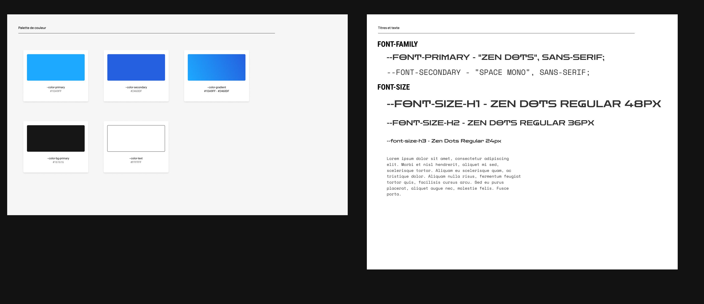
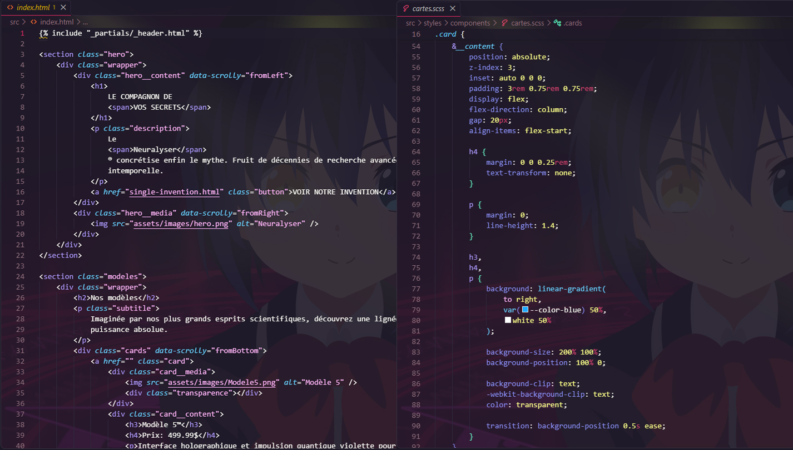
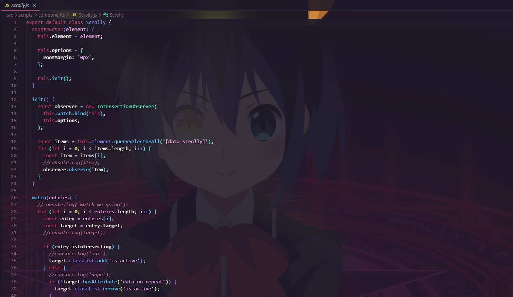
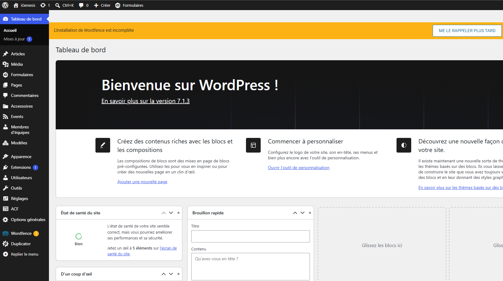
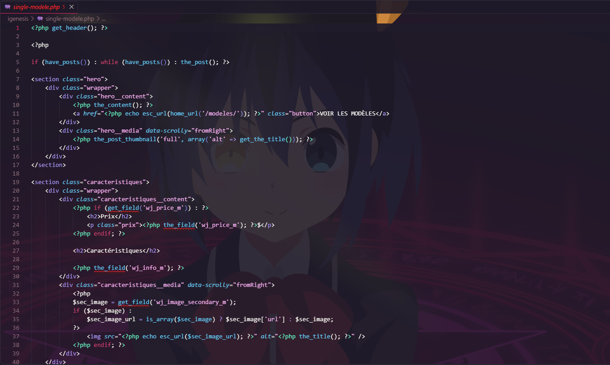
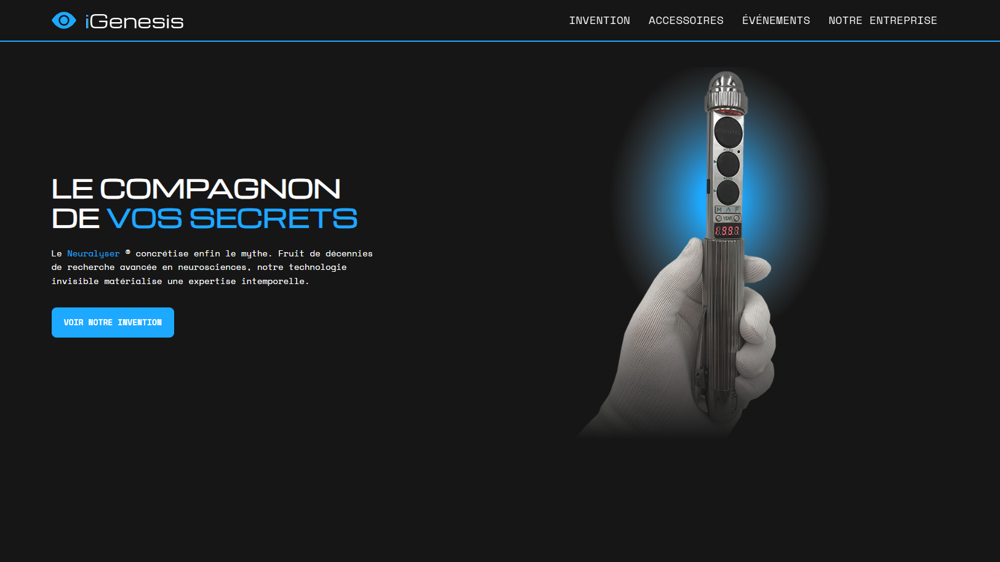

Étapes:

1 — Sélection de palette de couleur et de choix typographique sur Figma
Mon équipe procède avec la sélection d'une palette de couleur impécable et de deux excellents typographies qui seront utilisées dans mes maquettes.

2 — Création des maquettes du site et organisation des sections et pages dans Figma
Mon équipe conçois une maquette pour 8 différentes pages avec des différentes sections pour mon site web: la page d’accueil, la pages de l'invention et de ces modèles, la page d'un modèle, la page des accessoires, la page d'un accessoire, la pages des événements, la page d'un événement et la page de l'entreprise.

3 — Intégration html et developpement css du site de l'invention interdite avec VS Code
Suite à la maquette, mon équipe conçois avec du code html et css les pages du site tout en gardant une bonne organisation des sections et des classes que j’utilise pour le css.

4 — Programmation js et ajustement responsive du site sur VS Code
Après finaliser le css de base pour mon site, mon équipe a programmé des composantes et ajusté le responsive de mon site pour que ce soit calibrer pour le mobile.

5 - Création du wordpress pour le site de notre invention interdite
Pour le WebJam, mon équipe a crée un wordpress qui aura notre projet avec les cpt (custom post types) et les acf (advanced custom fields) nécessaires pour notre site.

6 - Programmation des templates du site en php avec VS Code
Avec le wordpress prêt, mon équipe crée notre thème personalisé , crée les templates nécessaires et transforme notre code html nécessaire en php.

7 - Résultat final d'iGenesis via le navigateur au choix
Maintenant que c’est tout finalisé, on peut survoler notre site sur un navigateur pour voir l'invention , les modèles de l'invention , les accessoires et les événements et notre entreprise avec les membres. (!Attention, le lien va au site mais en html, css et js)